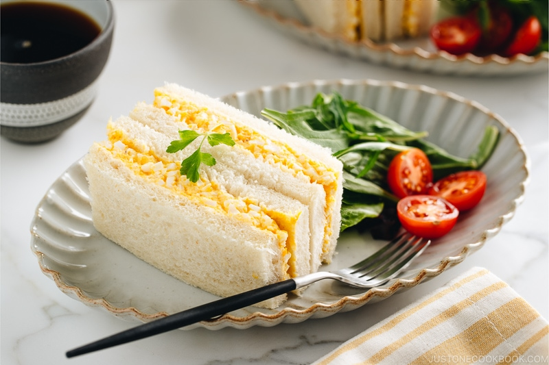

Japanese Egg Sandwich (Tamago Sando)

Egg salad tucked between slices of white bread.
Japanese Egg Sandwich is a timeless snack you can find in every convenience store in Japan.
The filling is creamy and bursting with a rich egg-yolk flavor, and the bread is soft and pillowy.
Some claim it’s the absolute best egg sandwich they ever tasted!
Ingredients
- Shokupan (Japanese Milk Bread)
- Kewpie Japanese Mayonnaise
- Eggs
- Salted butter
- Sugar
- Salt
- Black Pepper
- Milk
Cooking Steps
- Boil the eggs (can be prepped in advance).
- Peel and mash the eggs. Add all the seasonings and mix well.
- Assemble the egg mixture over the bread slices.
- Cut the crust off for the standard presentation and serve.
Homepage